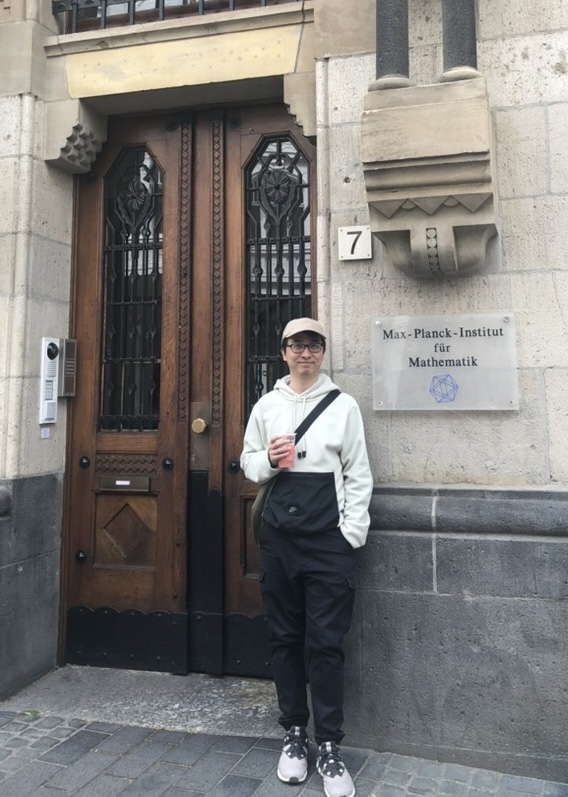

<div class="container">
    <div class="image-section">
        
    </div>    
    <div class="mid-section-home">
        <h1><span>Hi! I am </span>{{ site.author_name }}</h1>
        <div class="row sub-heading">
            <div class="summary-about-me">
                <p>{{ page.home_text }}</p>
            </div>
            <div class="nav-link">
                {% include navigation.html %}
            </div>
        </div>
    </div>
</div>